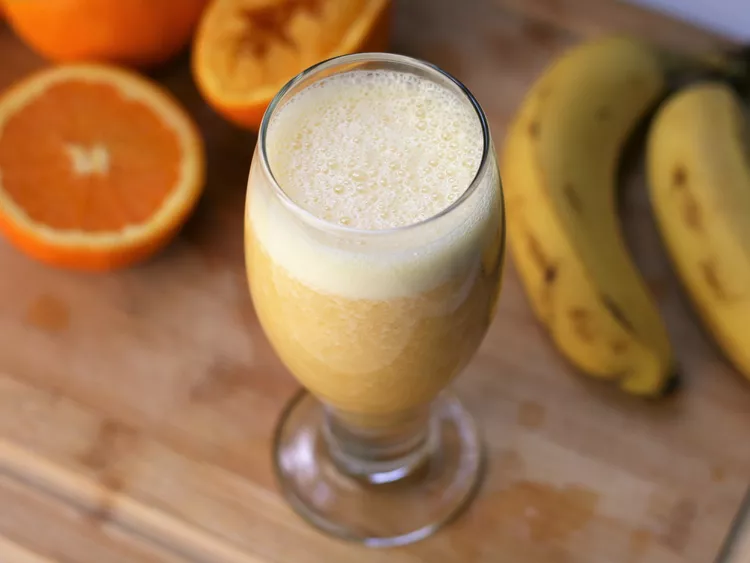

Monkey C Juice

Description
Snack time, any time's the right time for this delicious banana and orange juice drink.
This easy smoothie recipe is a 5-star favorite, and it's ready in less than 5 minutes.
Ingredients
- 1 Banana
- 8 oz orange juice
- Ice cubes
Steps
- Place juice and banana in blender. Blend on high until smooth and frothy. about 30 seconds.
- Pour mixture into your favorite cup and enjoy!!